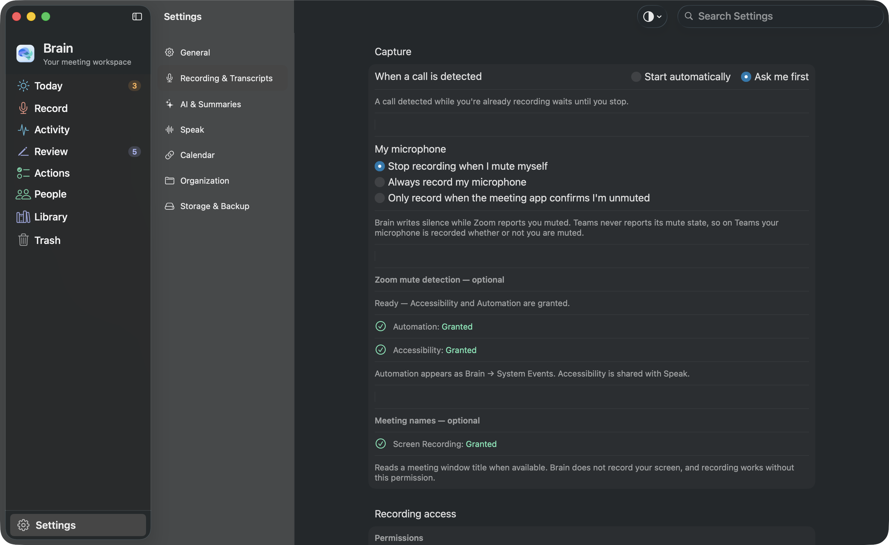
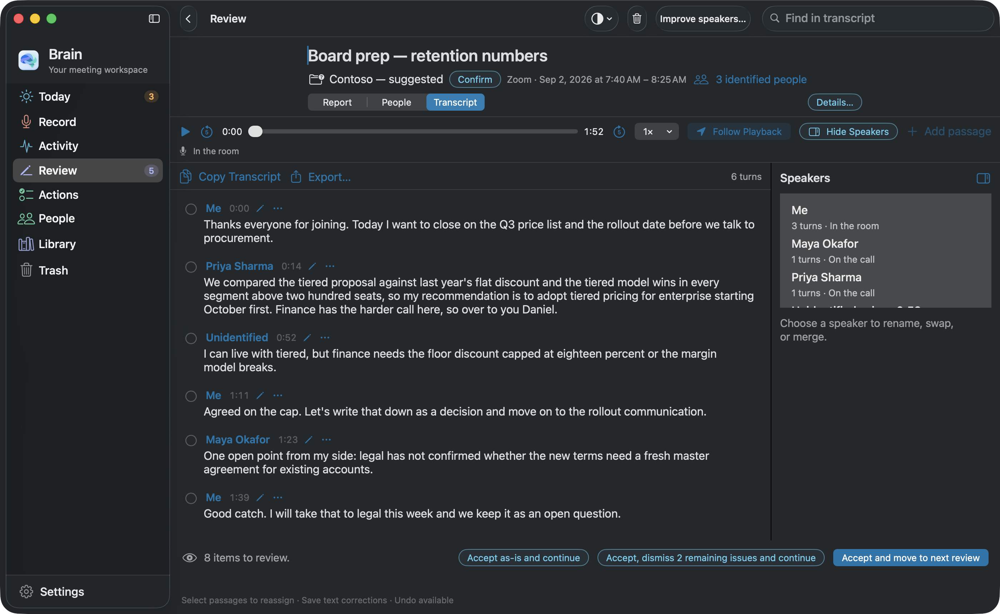
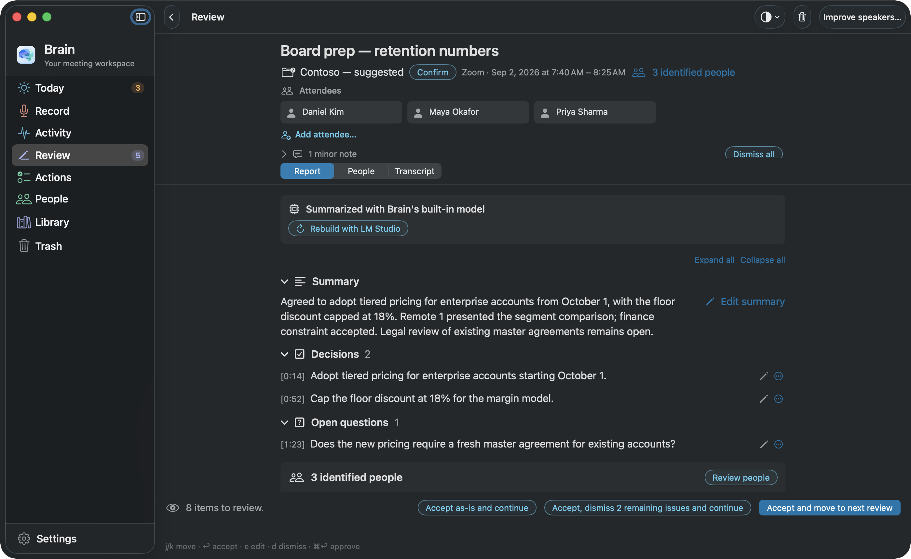
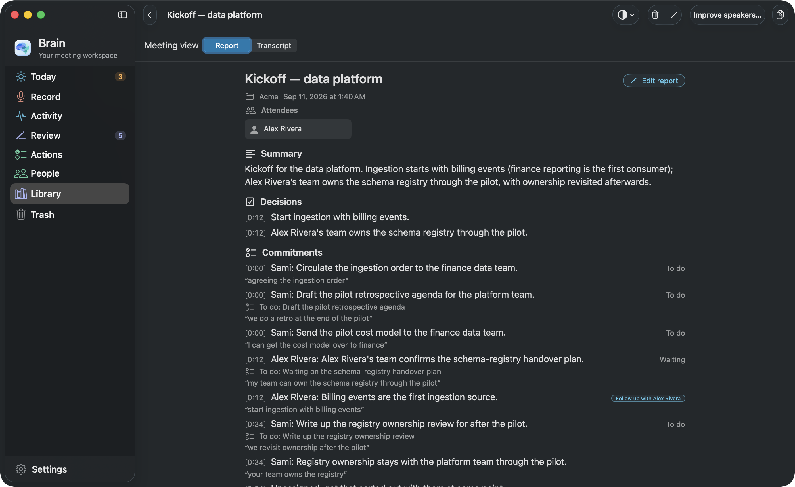

The real interface.
Sample content.
The Mac and Windows screens on the homepage were rendered by Brain’s own native interfaces. They are not HTML mockups or AI-generated images. Choose a platform on the homepage to see that platform’s captures; this page shows both.
Captured from Brain for Mac
The Mac captures come from a development build of the same source as Brain 0.2.59, the version offered for download. The app ran in a separate scratch home with a seeded sample profile, so no personal meeting, voice, or setting appears. Each image is a macOS window capture of that running app in dark appearance at 2× resolution, taken on September 11, 2026 (Edmonton time); the detail views are pixel crops of those same captures.
We have not redrawn controls, changed labels, recolored the app, or inserted invented elements into a screenshot. Website motion changes how a capture is presented; it does not show a running app session. The crop rectangles and file hashes are recorded alongside the site source.
Captured from Brain for Windows
The Windows captures use unmodified production interface code from the local Windows development source, captured on September 10, 2026 (Edmonton time). A separate test desktop and fresh sample profile keep personal meetings and settings out of the images.
The website uses complete captures and crops of those same pixels. The saved-transcript and People captures show the revised speaker interface. The other captures retain their earlier development versions. These are development-build captures, not a certification of the currently downloadable preview. The Windows preview notes describe current release limitations.
What the sample content means
The meeting names, transcript passages, helper and assistant responses, voice-review samples, and Speak history are seeded demonstration content. The recording timer, audio levels, audio-health messages, and the Listening indicator are sample states of real controls. They are not evidence that a live call, speech model, microphone, or text-insertion workflow was run successfully.
On the Mac, the live transcript and the meeting helper’s answer come from the app’s own test fixtures; call detection is shown in its default “ask me first” setting; the voice-review sample plays a placeholder recording; the Speak capsule is shown in its listening phase without a microphone; and the Speak settings show an “Enable Accessibility” prompt because the development bundle is not in that Mac’s Accessibility list. The Windows saved-meeting summary and assistant images come from the earlier ordinary Windows app journey and show generated sample audio with an actual local-model answer.
Mac and Windows have different interfaces, so each platform’s story on the homepage uses only that platform’s captures. See the Mac setup guide or the Windows setup guide for the platform you use.
Inspect the Mac captures


{kind=link}

{kind=link}


{kind=link}

{kind=link}



Inspect the Windows captures